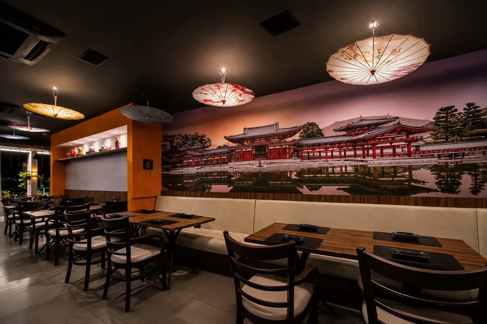
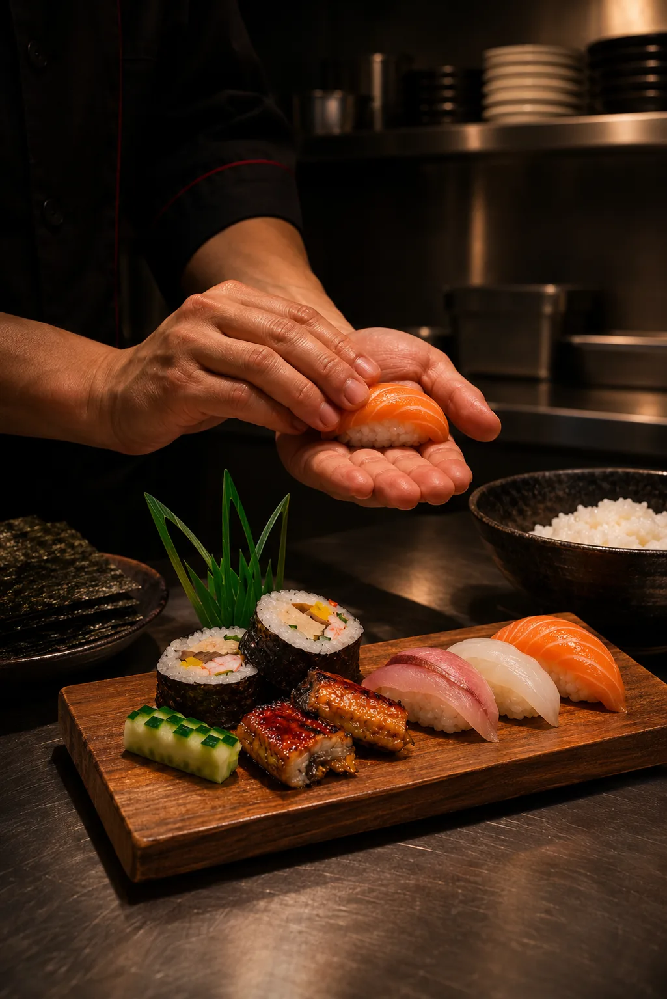
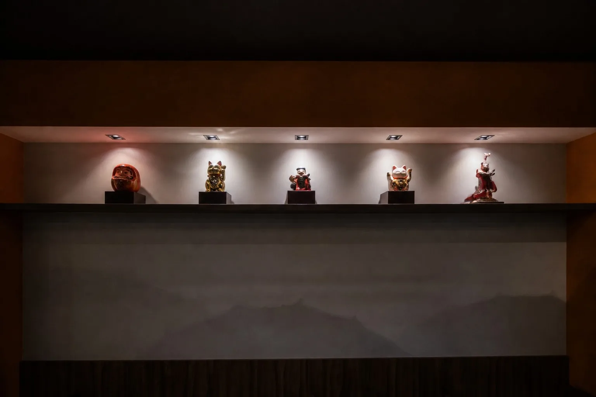
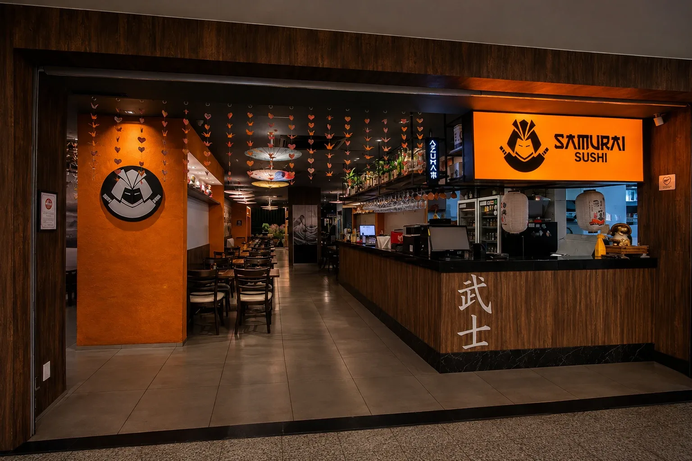

Cardápio
Sabores em equilíbrio
Técnica japonesa, olhar contemporâneo
Lançamento exclusivo · Samurai Fusion
Sequência Itamae
sete etapas · nove pratos · pescados da casa e da estação
Uma experiência exclusiva do Samurai, conduzida pelas mãos do chef.
Por pessoaR$ 249R$ 209
Valor promocional até 21 de novembro
Servida à mesa completa · cerca de 90 minutos
Quinta, sexta e sábado · das 18h às 21h30Limitada a 30 sequências por noite
Certificado JETRO
Único rodízio de Brasília certificado pelo Ministério da Agricultura do Japão
+20 anos
De culinária japonesa nas mãos do nosso chef
Peixe do dia
Pescados que mudam com a chegada do mercado
O percurso
Toque em cada etapa para ver o que chega à mesa.
Etapa 01 / 07 ·
Abertura
Harmonização com saquês+ R$ 120
Quatro doses da nossa carta, uma para cada bloco da sequência, e umeshu para acompanhar a sobremesa.
Abertura e quente leve chegam completos, com os dois pratos de cada etapa. Você escolhe só a sobremesa, ou deixa com o chef, que indica a mousse de matchá.
Os peixes do dia mudam com o mercado; nossa equipe informa os de hoje. Avise alergias e restrições antes da primeira etapa.
Experiência
Mais que sushi, uma experiência
Para todos os sentidos
O sushi começa muito antes do balcão: na escolha do peixe, no ponto do arroz, no silêncio do preparo.


Técnica
Cortes precisos e arroz feito na hora.
Estação
O melhor peixe de cada época do ano.
Hospitalidade
Cada visita recebida com atenção.
Galeria
Detalhes que ficam
Atmosfera única

Avaliações
O que dizem nossos convidados
Onde estamos
Venha nos encontrar em Brasília
Chegar com calma, ficar sem pressa

- Endereço
- CLSW 300 B, Bloco I, Loja 22
Sudoeste, Brasília · DF
70673-073 - Horários
- A confirmar
Contato
Venha viver essa experiência
Sua mesa espera por você